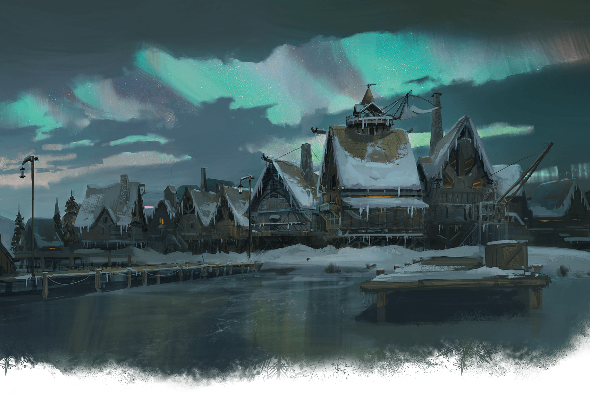
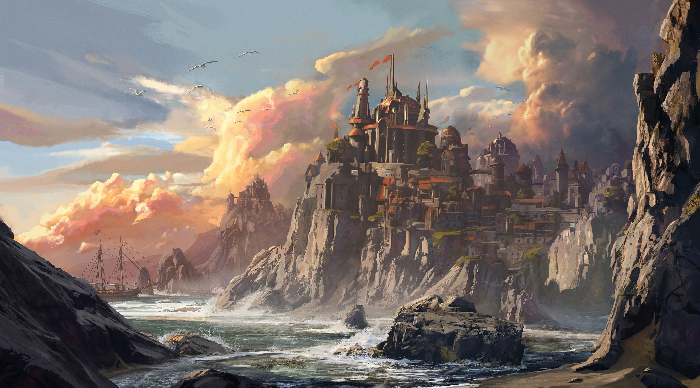

Across Faerûn, the name Waterdeep evokes feelings of wonder, awe, and envy.
Although it is not the largest nor most powerful, the City of Splendors is undoubtedly the most famous and most
cosmopolitan metropolis on the Sword Coast.
Across Faerûn, the name Waterdeep evokes feelings of wonder, awe, and envy.
Although it is not the largest nor most powerful, the City of Splendors is undoubtedly the most famous and most
cosmopolitan metropolis on the Sword Coast.
 Baldur's Gate is located to the south of the great city-state of Waterdeep, north of Amn along the well-traveled Coast Way road,
that passed over the Wyrm's Crossing, through the Outer City and into the Gate proper. It is nestled on a stretch of poor soil, within
a natural bay that formed
on the north bank of the River Chionthar about 40 miles (64.4 km) east from its mouth on the Sea of Swords.
Baldur's Gate is located to the south of the great city-state of Waterdeep, north of Amn along the well-traveled Coast Way road,
that passed over the Wyrm's Crossing, through the Outer City and into the Gate proper. It is nestled on a stretch of poor soil, within
a natural bay that formed
on the north bank of the River Chionthar about 40 miles (64.4 km) east from its mouth on the Sea of Swords.
 Anauroch, or The Great Sand Sea, is a magical desert in northern Faerûn.
It holds the remnants of the once-powerful Netherese Empire, their flying enclaves having crashed to the ground
when their greatest mage Karsus, in a desperate bid to end the war against the phaerimm, challenged the goddess
Mystryl for her divine mantle, causing the Weave to falter and all magic to fail.
Anauroch, or The Great Sand Sea, is a magical desert in northern Faerûn.
It holds the remnants of the once-powerful Netherese Empire, their flying enclaves having crashed to the ground
when their greatest mage Karsus, in a desperate bid to end the war against the phaerimm, challenged the goddess
Mystryl for her divine mantle, causing the Weave to falter and all magic to fail.

Icewind Dale is an arctic tundra located in the Frozenfar region of the North,
known for being the northernmost explored region in all of Faerûn.
It earned its name from the harsh winds and icy storms that destroyed buildings and scoured the landscape.

Neverwinter stands on the northern Sword Coast, on the High Road between Waterdeep and Luskan, specifically
between Leilon and Port Llast. To the east lay the Neverwinter Wood and, at its heart, the volcanic Mount Hotenow.
The Neverwinter River was heated by fire elementals living under the volcano before flowing through the forest and
the city. It carried its supernatural warmth with it, keeping the river from freezing up in winter and the gardens
green year-round.